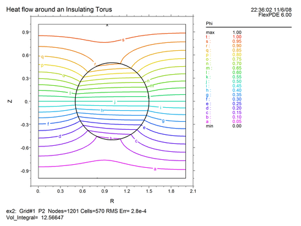
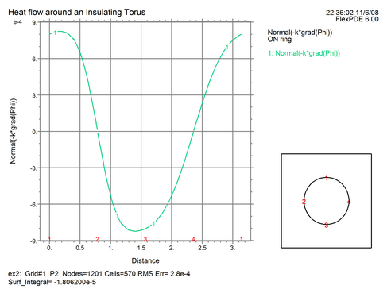

|
A Cylindrical Example |

  
|
|
A Cylindrical Example |
|
Let us now convert our Cartesian test problem into a cylindrical one. If we rotate the box and blob around the left boundary, we will form a torus between two circular plates (like a donut in a round box).
These changes will be required:
| • | We must offset the coordinates, so the left boundary becomes R=0. |
| • | Since we want the rotation axis in the Y-direction, we must use YCYLINDER coordinates. |
| • | Since 'R' is now a coordinate name, we must rename the 'R' used for the blob radius. |
The full script, converted to cylindrical coordinates is then:
TITLE 'Heat flow around an Insulating Torus'
COORDINATES
YCYLINDER
VARIABLES
Phi { the temperature }
DEFINITIONS
K = 1 { default conductivity }
Rad = 0.5 { blob radius (renamed)}
EQUATIONS
Div(-k*grad(phi)) = 0
BOUNDARIES
REGION 1 'box'
START(0,-1)
VALUE(Phi)=0 LINE TO (2,-1)
NATURAL(Phi)=0 LINE TO (2,1)
VALUE(Phi)=1 LINE TO (0,1)
NATURAL(Phi)=0 LINE TO CLOSE
REGION 2 'blob' { the embedded blob }
k = 0.001
START 'ring' (1,Rad)
ARC(CENTER=1,0) ANGLE=360 TO CLOSE
PLOTS
CONTOUR(Phi)
VECTOR(-k*grad(Phi))
ELEVATION(Phi) FROM (1,-1) to (1,1)
ELEVATION(Normal(-k*grad(Phi))) ON 'ring'
END
The resulting contour and boundary plot look like this:


Page url: index.html?example.html